Llaceria
Trames de línies i figures geomètriques entrellaçades.
Arquitectura, espai i ornamentació: un recorregut per les formes i els territoris.
Comença el recorregut ↓Prepara les obres PAU ↗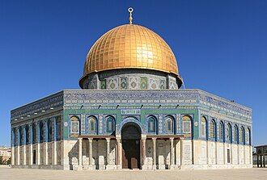
L’arquitectura islàmica integra tradicions de les civilitzacions precedents. De l’art romà incorpora les columnes, l’arc de mig punt i les dovelles bicolors; de l’art bizantí, les voltes i les cúpules; del Pròxim Orient, els arcs apuntats i lobulats. En l’àmbit hispànic també incorpora la tradició de l’arc de ferradura visigòtic.
L’arquitectura ocupa un lloc central. La pintura, el mosaic i l’escultura s’apliquen especialment a la decoració. En els espais religiosos predominen els motius abstractes; en contextos civils també existeixen representacions figuratives.
Trames de línies i figures geomètriques entrellaçades.
Decoració vegetal de fulles i tiges estilitzades.
Composicions que entrellacen motius vegetals i geomètrics.
Inscripcions ornamentals, sovint amb textos religiosos.
Els mocàrabs són elements prismàtics que formen composicions semblants a estalactites en voltes i cúpules. La ceràmica decorada i vidriada completa molts revestiments.
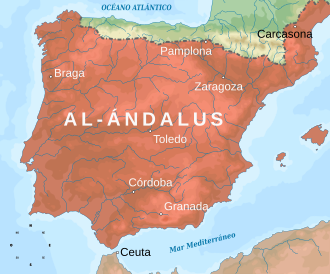
Assimilació de tradicions anteriors i desenvolupament de l’arquitectura andalusina.
Complexitat tècnica i riquesa ornamental: arcuacions, voltes de nervis i ampliacions de la mesquita de Còrdova.
Desenvolupament de l’arquitectura palatina i d’arcs mixtilinis i polilobulats, com a l’Aljaferia.
Arquitectura de composició austera que potencia l’estructura sense abandonar la decoració. La Giralda n’és un exemple.
Gran riquesa decorativa interior, amb guix, fusta, ceràmica, jardins i aigua. El conjunt de l’Alhambra n’és el gran referent.
Al-Àndalus canvià d’extensió al llarg dels segles. Cal relacionar cada mapa amb el període representat, sense interpretar-lo com una frontera permanent.
El mapa situa l’imperi almohade al Magrib i a la península Ibèrica; compara’l amb el mapa d’al-Àndalus de l’any 732.
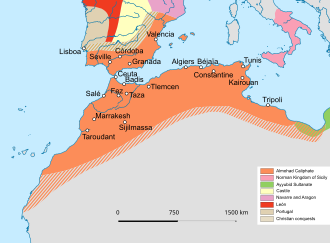
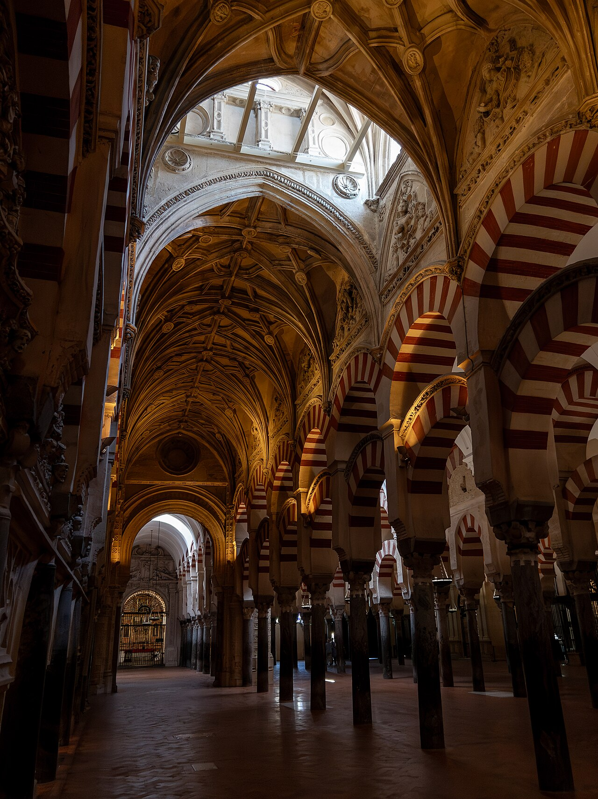
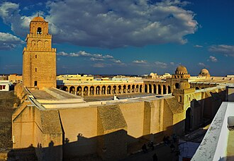
La mesquita respon a la necessitat de pregària col·lectiva. La forma hipòstila més habitual combina una sala coberta i un pati; també hi ha altres tipologies, incloses les de planta central.
Sala d’oració, sovint dividida en naus.
Mur orientat cap a la Meca, amb excepcions històriques com Còrdova.
Fornícula que assenyala la direcció de la pregària.
Trona des d’on es pronuncia el sermó.
Espai reservat al sobirà en algunes mesquites.
Pati descobert, sovint porticat.
Torre des d’on es crida a l’oració.
Rentat ritual abans de la pregària; requereix un punt d’aigua.
Exemples destacats: Damasc, Kairouan i Còrdova. La Cúpula de la Roca és un santuari de planta central amb una funció diferent de la mesquita congregacional.
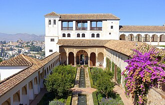
L’alcassaba és un recinte fortificat amb funcions militars i administratives. Els castells i les fortaleses aprofiten les irregularitats del terreny. Muralles, torres, merlets i portes monumentals protegeixen ciutats i conjunts palatins. Un exemple és el castell de la Suda de Tortosa.
Els palaus són residències de sobirans i prínceps. Poden formar autèntiques ciutats palatines, com Madīnat al-Zahrā’. Diferencien espais públics i privats, amb dependències distribuïdes al voltant de patis. Jardins i aigua articulen l’espai i relacionen art i natura.
Exemples: l’Aljaferia de Saragossa, l’Alhambra de Granada i el Generalife.
Els hammams tenen una funció higiènica, social i ritual. Hereus de la tradició termal, solen incloure vestíbul i sales freda, tèbia i calenta. Es localitzen sovint prop de mercats i mesquites.
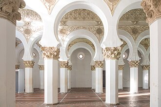
El terme mudèjar deriva de l’àrab mudayyan, «aquell a qui s’ha permès quedar-se». Designa, en història de l’art, obres dels regnes cristians que incorporen formes, tècniques i materials de tradició hispanomusulmana.
En un mateix edifici conviuen elements romànics o gòtics —com els arcs de mig punt i apuntats— amb arcs de ferradura, lobulats i decoracions de tradició islàmica.
El maó és habitual en murs i pilars; el guix i la fusta destaquen en l’ornamentació. Les cobertes de fusta poden presentar teginats i estructures de tradició andalusina.
El període estudiat s’estén dels segles XI al XVI. Distingim una fase romanicomudèjar (segles XI–XII) i una fase goticomudèjar (segles XIII–XVI), amb diferències regionals.
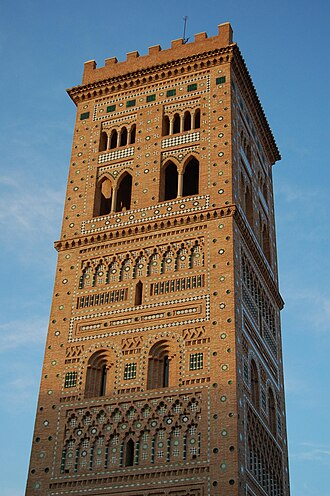
| Focus | Trets principals | Exemples |
|---|---|---|
| Castellanolleonès | Romànic del maó; absis semicirculars, arcs de mig punt, cobertes de fusta i arcuacions cegues. | San Tirso i San Lorenzo de Sahagún; La Lugareja d’Arévalo. |
| Toledà | Tradició islàmica combinada amb formes cristianes. Arcs de ferradura, torres semblants a minarets i sinagogues amb rica decoració. | San Román, Santiago del Arrabal, Santo Tomé, Santa María la Blanca, sinagoga del Trànsit i Puerta del Sol. |
| Aragonès | Rica decoració exterior de maó, arcs cecs, motius geomètrics i ceràmica vidriada policroma. | Torres de San Salvador i San Martín de Terol; Magdalena i San Pablo de Saragossa. |
| Andalús | Estructures gòtiques combinades amb ornamentació de tradició nassarita, guixeries, mocàrabs i fusta. | Reales Alcázares de Sevilla, Capilla Real de Còrdova, Santa Marina i San Marcos de Sevilla; claustre de Guadalupe. |
Santa María la Blanca distribueix l’espai en cinc naus amb pilars octagonals i arcs de ferradura. La sinagoga del Trànsit, del segle XIV, destaca per la seua ornamentació interior. La Puerta del Sol és una entrada mudèjar del recinte emmurallat.
Les torres de planta quadrada incorporen arcuacions cegues, franges geomètriques i xarxes de rombes o panys de sebka. El maó i la ceràmica converteixen la superfície exterior en un element ornamental.
Al palau de Pere I dels Reales Alcázares destaquen el Saló dels Ambaixadors i les cobertes ornamentals. El claustre de Guadalupe, a Càceres, s’inclou en aquest àmbit d’influència i presenta un templet central.
Aquest desenvolupament segueix l'ordre i els conceptes del text original. El contingut s'ha adaptat al valencià normatiu i a la lectura en pantalla; les precisions historiogràfiques s'indiquen expressament quan cal. Les imatges il·lustren els exemples esmentats en cada apartat.
El manual explica que els pobles àrabs, molts dels quals practicaven el nomadisme, no partien d'una tradició arquitectònica monumental homogènia. En entrar en contacte amb els territoris conquerits, l'arquitectura islàmica va assimilar i transformar el substrat constructiu de civilitzacions precedents. De l'art romà adoptà les columnes, els arcs de mig punt i l'alternança cromàtica de dovelles. De Bizanci incorporà sistemes de coberta amb voltes i cúpules; de les tradicions del Pròxim Orient, l'arc apuntat i el lobulat; i, en el cas peninsular, reinterpretà l'arc de ferradura emprat en l'arquitectura visigòtica.
Edifici commemoratiu de planta central concebut al voltant de la roca venerada, no com una sala hipòstila destinada a acollir una gran congregació. Permet observar la influència de les arquitectures tardoantigues i bizantines.
Fotografia i llicència a CommonsL'art musulmà està estretament vinculat a la religió, i el manual subratlla la primacia de l'arquitectura respecte de les arts plàstiques. La pintura, l'escultura i el mosaic s'integren sovint com a ornamentació de les superfícies arquitectòniques. En els espais de culte predominen els motius no figuratius; això no exclou la representació d'éssers vius en objectes o espais cortesans.
Identifica les diferències entre aquests cinc recursos decoratius.
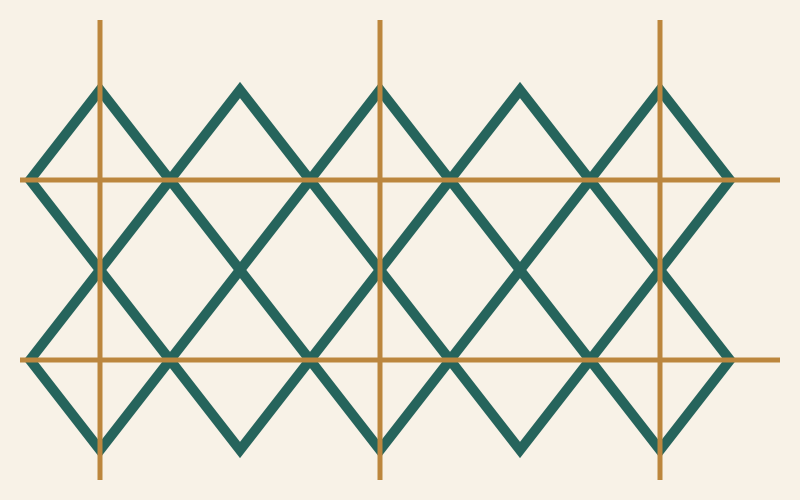
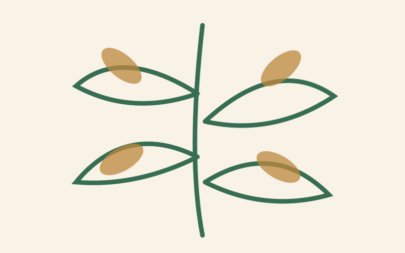
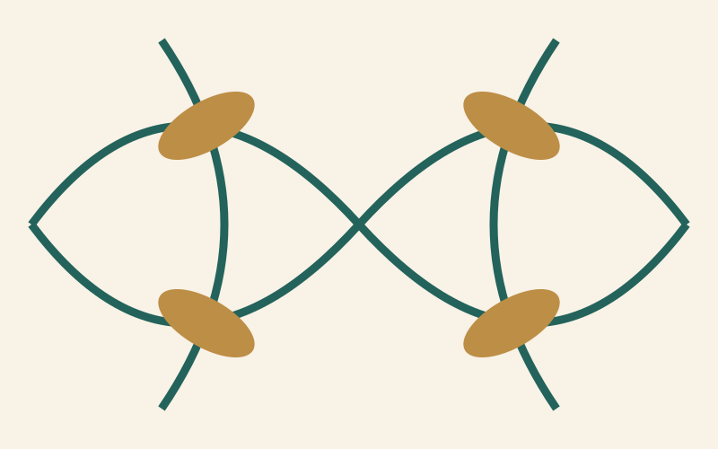
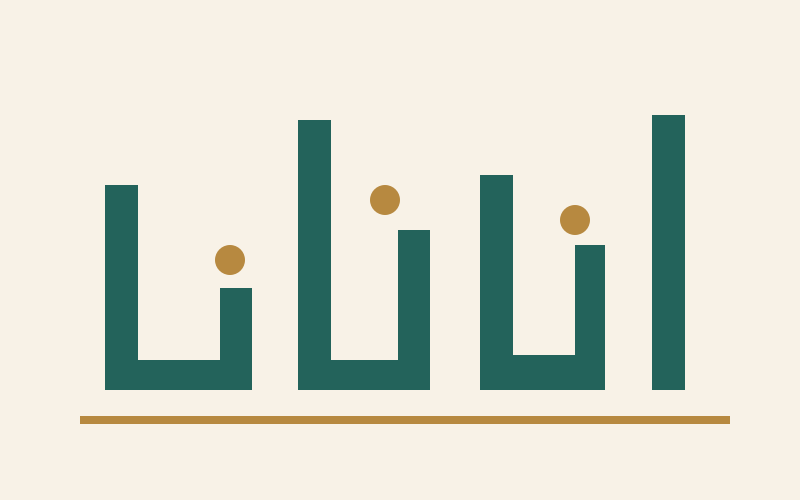
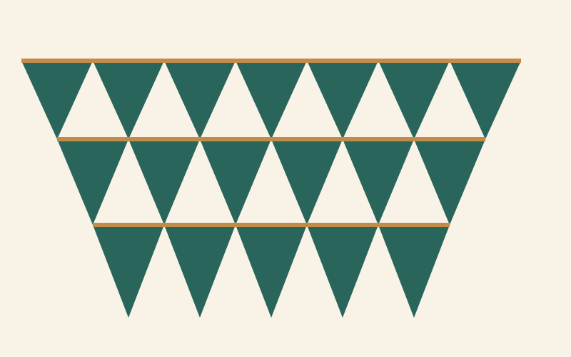
Nota visual: les cinc imatges són esquemes didàctics originals, no fotografies de peces històriques. Les imatges d'obres i edificis del tema es mantenen.
Llaceria geomètrica: composicions de línies, estrelles i polígons entrellaçats que poden generar trames repetitives.
Atauric: motius vegetals estilitzats, com fulles i tiges simples o dobles.
Arabesc: decoració que combina línies geomètriques i formes vegetals.
Cal·ligrafia: inscripcions ornamentals, sovint de contingut religiós, en escriptura cúfica o altres variants de l'àrab.
Mocàrabs: conjunt de prismes superposats que pengen o escalonen sostres i voltes amb un aspecte semblant a estalactites.
Ceràmica vidriada: peces de diverses formes i mides, amb decoració i recobriment vitrificat.
L'alternança de dovelles clares i rogenques i l'ús d'arcs de ferradura i de mig punt permeten comparar materials, formes constructives i efecte ornamental. El text original destaca també els arcs trilobulats, l'atauric i la llaceria.
Època omeia (segles VIII–IX): evolució de les solucions anteriors i consolidació de llenguatges propis a l'emirat de Còrdova. Etapa califal (segle X): culminació tècnica i ornamental, visible especialment en les voltes de nervis i en les complexes arcuacions de la mesquita cordovesa. Període almohade (segles XII–XIII): tendència a una arquitectura més sòbria i a potenciar l'estructura, sense renunciar a motius ornamentals. Període nassarita (segles XIII–XV): gran refinament dels interiors, amb guixeries, ceràmica, fusta i aigua, encara que sovint s'utilitzen materials estructurals modestos.
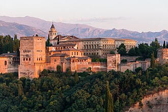
Els interiors palatins nassarites destaquen per la densitat decorativa dels murs i de les cobertes: atauric, llaceria, inscripcions, ceràmica i mocàrabs. És una síntesi de decoració, arquitectura i poder.
El text original identifica sis característiques tecnicoconstructives fonamentals, que convé memoritzar i identificar en fotografies:
El manual distingeix dues grans tipologies: arquitectura religiosa i arquitectura civil.
Les dovelles rogenques i blanques accentuen el ritme de les arcuacions. El sistema de doble arc és una solució constructiva i visual singular del conjunt.
La mesquita és l'edifici religiós més destacat per a la pregària col·lectiva. El manual relaciona la seua configuració amb basíliques romanes i paleocristianes i amb determinats models bizantins, encara que la mesquita de sala hipòstila i pati és una de les formes més freqüents. En la planta rectangular es diferencien la sala d'oració (haram) i el pati (sahn).
L'haram pot subdividir-se en nombroses naus; el mur d'orientació de l'oració és l'alquibla o quibla, en el qual se situa el mihrab, una fornícula o àmbit que assenyala la direcció ritual. Prop d'aquest espai s'ubica el minbar, trona del sermó. En algunes mesquites, com Còrdova, hi ha una maqsura, espai reservat i delimitat pròxim al mihrab.
El sahn és un pati porticat i descobert. Acostuma a tindre un punt d'aigua per a les ablucions o purificació ritual. El minaret és la torre des de la qual es fa la crida a l'oració. El text destaca les mesquites de Damasc, Kairouan i Còrdova; la Cúpula de la Roca de Jerusalem, tradicionalment anomenada al manual «mesquita d'Omar», té una funció i una tipologia arquitectònica diferents.
En la vista del conjunt poden reconèixer-se el sahn, el haram i el minaret de tres cossos escalonats. El manual destaca la seua influència en mesquites nord-africanes.

.jpg?width=900)
Les alcassabes compleixen funcions militars i administratives. Les fortaleses i castells defensen el territori i aprofiten les irregularitats del relleu, com el castell de la Suda de Tortosa. Muralles, torres amb merlets i portes monumentals organitzen la defensa urbana i palatina.
Els palaus es destinen a residència dels sobirans i prínceps. Alguns constitueixen autèntiques ciutats palatines, com Madīnat al-Zahrā’, i acostumen a separar els àmbits de la vida pública dels privats. Les dependències es distribueixen al voltant de patis, com a l'Aljaferia de Saragossa. Els jardins i l'aigua tenen una funció espacial, climàtica, estètica i representativa: l'Alhambra i el Generalife en són exemples emblemàtics.
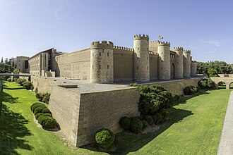

La ciutat palatina promoguda per Abd-ar-Rahman III incloïa salons de representació, patis i espais residencials dins d'un recinte emmurallat. Els capitells i relleus ornamentals revelen la gran qualitat del treball escultòric decoratiu.
Imatge: EmDee · CC BY-SAEls hammams solien situar-se en centres urbans, prop de mercats i mesquites. Hereus de la tradició de les termes romanes, disposaven de vestíbul i sales freda, tèbia i calenta. La seua funció no era només higiènica, sinó també social i ritual.
El mot mudèjar deriva de l'àrab mudayyan, «aquell a qui s'ha permés quedar-se». En l'àmbit artístic designa principalment obres arquitectòniques realitzades als regnes cristians que incorporen elements i tècniques característics de la tradició hispanomusulmana.
La fusió de llenguatges permet reconèixer en un mateix edifici elements romànics i gòtics —com els arcs de mig punt i apuntats— i solucions de tradició islàmica —com els arcs de ferradura i lobulats—. El maó predomina en murs i pilars, mentre que el guix i la fusta s'empren especialment en revestiments i decoració. Destaquen les cobertes de fusta amb enteixinats i les guixeries.
Segons la periodització del manual, l'art mudèjar s'estén dels segles XI al XVI. S'hi distingeixen el romanicomudèjar (segles XI i XII) i el goticomudèjar (segles XIII–XVI). El seu desenvolupament divers s'associa a la progressiva incorporació de territoris d'al-Àndalus als regnes cristians i a la circulació de mestres, tècniques i models.
Els quatre grans focus proposats són el castellanolleonès (predomini del romanicomudèjar), el toledà (barreja de tradicions cristianes i almohades), l'aragonès (decoració exterior abundant) i l'andalús (riquesa ornamental de tradició nassarita).
Les tècniques i les formes mudèjars apareixen en esglésies, palaus i sinagogues. Santa María la Blanca i la sinagoga del Trànsit de Toledo mostren la riquesa d'aquesta tradició compartida entre comunitats i encàrrecs diferents.
Malgrat certes semblances en materials i tècniques constructives, els focus mudèjars tenen trets particulars a causa de la diversitat geogràfica i cronològica.
A Castella i Lleó predomina el romanicomudèjar dels segles XI i XII, associat a edificis de traça romànica: absis semicirculars, arcs de mig punt i cobertes de fusta. L'ús generalitzat del maó ha motivat la denominació romànic del maó. La decoració exterior acostuma a ser moderada i es concentra en arcs cecs. Exemples: les esglésies de San Tirso i San Lorenzo de Sahagún i La Lugareja d'Arévalo.
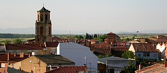
Compara els absis de maó, les arcuacions cegues i les formes romàniques. L'absis de San Tirso constitueix un exemple representatiu de l'ornamentació exterior del focus castellanolleonès.
Toledo és un centre essencial de l'art mudèjar castellà: capelles, esglésies, torres, muralles i sinagogues. Els primers temples reconstruïts, com San Román, conserven l'arc de ferradura de tradició califal. Des de la segona meitat del segle XIII, el gòtic es combina amb aquesta herència. Santiago del Arrabal mostra la síntesi de llenguatges, mentre que torres com les de San Román i Santo Tomé recorden els minarets i incorporen arcuacions cegues, també polilobulades.
La sinagoga de Santa María la Blanca organitza cinc naus separades per pilars octagonals i arcs de ferradura, amb una espacialitat que recorda l'arquitectura de mesquites. La sinagoga del Trànsit, construïda al segle XIV, destaca per les guixeries de tradició nassarita i la coberta de fusta. En l'arquitectura civil sobresurt la Puerta del Sol de Toledo, de la mateixa centúria.
Precisió de data: el text original data el Trànsit al segle XV en un passatge, però el seu origen és del XIV; el web manté aquesta correcció expressa per evitar memoritzar una dada errònia.
Identifica les cinc naus, els pilars octagonals i els arcs de ferradura. Relaciona la distribució espacial amb els intercanvis artístics de la Toledo medieval.
El focus aragonès destaca per la qualitat i el nombre d'edificis i, sobretot, per la riquesa de la decoració exterior. El maó forma arcuacions cegues amb arcs mixtilinis, polilobulats i de ferradura, al costat de motius geomètrics i vegetals. La ceràmica vidriada policroma aporta contrast cromàtic. Són característiques les torres de les esglésies del Salvador i San Martín de Terol i les de la Magdalena i San Pablo de Saragossa. Les xarxes de rombes o sebka exemplifiquen l'ornamentació geomètrica d'arrel islàmica.
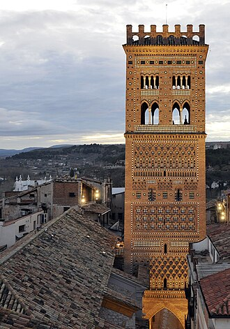
Es localitza especialment a Còrdova i Sevilla. Les estructures reflecteixen el llenguatge gòtic, visible en l'arc apuntat: la Capella Reial de la mesquita de Còrdova i les esglésies de Santa Marina i San Marcos de Sevilla en són exemples. En canvi, la decoració adopta un vocabulari nassarita molt ric, amb guixeries, mocàrabs i cobertes de fusta.
El millor exemple palatí és el palau de Pere I dels Reales Alcázares de Sevilla, on sobresurt el Saló dels Ambaixadors. El manual inclou també en aquest focus el claustre del monestir de Guadalupe (Càceres), amb arcuacions de tradició islàmica i un templet central de maó.
A l'arquitectura nassarita i en diversos palaus mudèjars, els patis i les fonts ordenen la circulació, aporten frescor i reforcen l'efecte estètic. Compara el Generalife amb el Pati de les Donzelles dels Reales Alcázares.
Observa cada fotografia i identifica'n la funció, l'etapa i dos trets artístics. Les imatges estan allotjades al repositori; els enllaços porten a les fitxes de Wikimedia Commons.
Un espai que anirem ampliant amb noves obres. Cada fitxa seguirà una estructura constant: identificació, context, anàlisi formal, funció i significat, influències i conclusió. La selecció s'ha de contrastar sempre amb el llistat oficial vigent de la PAU.
Una obra imprescindible per comprendre l'arquitectura d'al-Àndalus, la seua evolució i el llenguatge formal del califat.
Després de la conquesta islàmica de la península Ibèrica (a partir del 711), Còrdova es convertí en capital de l'emirat omeia independent el 756 i, més tard, del califat proclamat per Abd-ar-Rahman III el 929. La gran mesquita fou un símbol de la comunitat musulmana i del prestigi polític dels governants; les ampliacions manifesten el creixement urbà i el poder del règim.
La mesquita original és de tipus hipòstil: una sala d'oració de moltes columnes i onze naus perpendiculars al mur de la quibla, complementada per un pati porticat o sahn. La successió de columnes genera un espai extens i modular. Els arcs inferiors de ferradura i els arcs superiors de mig punt formen un sistema superposat que augmenta l'altura de la coberta i crea un ritme visual característic. Les dovelles alternen tonalitats rogenques i clares.
L'ampliació d'al-Hàkam II és la més refinada: la maqsura es distingeix pels arcs entrecreuats i polilobulats i les voltes de nervis que no es creuen al centre. El mihrab s'enriqueix amb mosaics de tradició bizantina i decoració vegetal i epigràfica. L'ornamentació reforça la solemnitat de l'àmbit més pròxim a la quibla.
Nucli fundacional de la sala de pregària, amb onze naus.
Primera ampliació cap al sud i prolongació de les naus.
Ampliació del pati i nou alminar, integrat després en el campanar.
Expansió meridional, maqsura, mihrab i voltes monumentals.
Ampliació cap a l'est, perquè el riu dificultava continuar cap al sud.
Era la mesquita aljama de la ciutat, destinada especialment a l'oració comunitària del divendres, i un emblema del poder omeia. Després de la conquesta cristiana de Còrdova el 1236, l'edifici fou consagrat com a catedral i va rebre intervencions gòtiques, renaixentistes i barroques, inclòs un gran creuer catedralici al segle XVI. Aquesta superposició d'etapes el converteix en un testimoni excepcional de la història arquitectònica. La UNESCO el reconegué com a Patrimoni Mundial el 1984.
Combina el llegat romà i visigòtic (columnes reutilitzades i arc de ferradura) amb solucions pròpies de l'art omeia i de la cultura constructiva andalusina. El sistema d'arcs superposats, la complexitat de la maqsura i la qualitat del mihrab en fan una referència fonamental de l'art islàmic occidental.
La mesquita de Còrdova és una obra capital de l'arquitectura hispanomusulmana, iniciada el 786 sota Abd-ar-Rahman I i ampliada fins a la fi del segle X. La seua planta hipòstila disposa d'un pati i una gran sala d'oració amb naus perpendiculars a la quibla. Destaquen les columnes amb arcs superposats de ferradura i mig punt, amb dovelles de colors alterns, que creen un espai rítmic i visualment profund. En l'ampliació d'al-Hàkam II sobresurten la maqsura amb arcs entrecreuats, les voltes nervades i el mihrab de mosaics. A més de la funció religiosa, l'edifici expressava el poder dels emirs i califes cordovesos. La transformació en catedral a partir del segle XIII explica la convivència d'elements islàmics i cristians.
Pistes: creixement urbà i representació del poder; espai reservat, nínxol i mur d'orientació; arcs superposats que augmenten altura; maqsura i mihrab monumentals; conversió en catedral.
Fonts de contrast: cronologia oficial · evolució de l'edifici · Centre Virtual Cervantes.
1. Romà: columnes i mig punt; bizantí: voltes i cúpules; Pròxim Orient: arcs apuntats i lobulats; visigòtic: ferradura en el context hispànic.
2. Ferradura: prolonga la curvatura per davall del semicercle; lobulat: divideix l’intradós en lòbuls; apuntat: dos segments que convergeixen en un vèrtex.
3. Sahn, ablucions, haram, alquibla i mihrab. Afig minaret, minbar i maqsura si escau.
4. Purificació ritual a la mesquita; composició espacial, frescor i dimensió simbòlica i sensorial al palau.
5–6. Justifica cada tret amb elements visibles i evita identificar un estil només per un arc.
Adaptació didàctica de les pàgines aportades (apartats 1.–4.), sense els peus d’imatge originals. S’han matisat algunes generalitzacions i corregit la datació de la sinagoga del Trànsit al segle XIV.
Les fotografies i els mapes procedeixen de les pàgines de Wikipèdia enllaçades. Cada imatge obri el seu article; la fitxa del fitxer a Wikimedia Commons identifica autoria i llicència. Les còpies locals eviten dependències d’enllaços externs en visualitzar el recurs.


.jpg){kind=link}